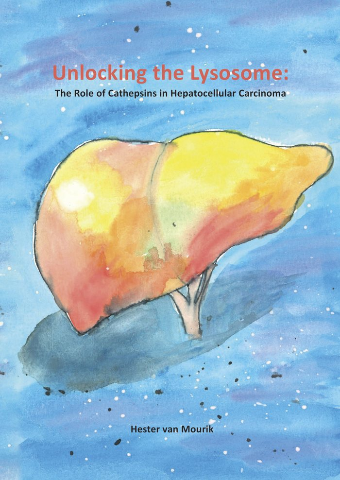
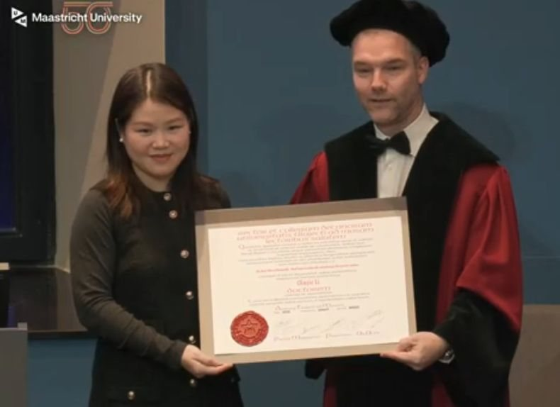
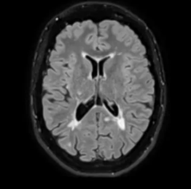
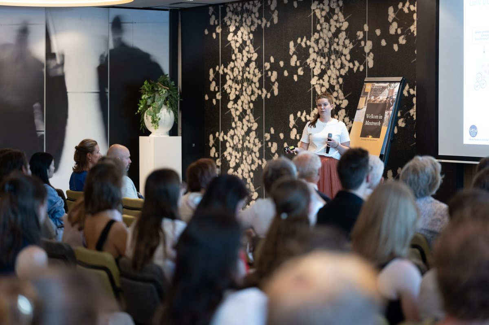
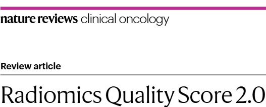
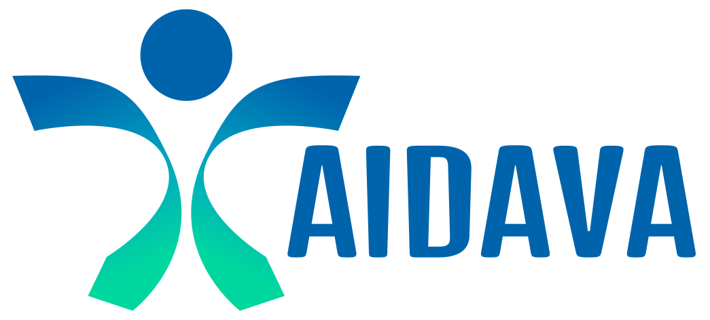

7Dec 2026
Upcoming PhD defence · 12:45
Elzbieta Budginaitė
“Quantitative characterisation of regional lymph node morphology and immune microarchitecture in oesophagogastric cancer using computational pathology”


Everything happening in the department: new publications, PhD defences and inaugural lectures, people joining the team, grants, prizes and awards, courses such as AI4Imaging, and other events.
“Quantitative characterisation of regional lymph node morphology and immune microarchitecture in oesophagogastric cancer using computational pathology”
Jella van de Laak will defend her PhD thesis on Friday 16 April 2027 at 10:00. More details to follow.
Jan Theys will give his inaugural lecture, formally accepting his position as Professor of Precision Oncology. The title of the lecture will follow.
On 12 November 2026, Yousif Ahmed Widaatalla successfully defended his PhD thesis “Stability, Harmonization, and Clinical Translation of Radiomics: A Multimodal Investigation into Liver, Esophageal, and Skin Cancers”, supervised by Prof. Dr. Philippe Lambin with co-supervisors Dr. Henry C. Woodruff and Dr. Zohaib Salahuddin. Congratulations, Dr. Widaatalla!
New publication alert: “Defining the Role of Artificial Intelligence in Reconstructive Microsurgery: An International Two-Stage Survey of Reconstructive Microsurgeons” by Wolffenbuttel, Salahuddin, van der Hulst and Qiu is now available online in the Journal of Plastic, Reconstructive & Aesthetic Surgery (JPRAS).
On 8 October 2026, Wasti Murad joined the D-Lab and will work on the Hanarth Fonds project “Explainable Foundation Model-Driven Prognostic Modeling in High-Grade Serous and Rare Ovarian Cancers for Personalized Treatment”.

On 8 September 2026, Hester van Mourik successfully defended her PhD thesis “Unlocking the lysosome: the role of cathepsins in Hepatocellular Carcinoma”. Congratulations, Dr. van Mourik!
Philippe Lambin and Zohaib Salahuddin (PIs) from the Department of Precision Medicine will prospectively test their prostate AI tool together with Anshu Ankolekar (lead PI) from Maastro. The five-year study across three Dutch hospitals combines AI-assisted prostate MRI assessment with a patient decision aid, aiming for at least 20% fewer unnecessary biopsies in men with an equivocal (PI-RADS 3) MRI, without missing clinically relevant cancers.
New publication alert: “Counterfactuals and uncertainty-based explainable paradigm for the automated detection and segmentation of renal cysts in contrast-enhanced abdominal computed tomography: A multi-center study” has been published in Artificial Intelligence in Medicine (Elsevier).
Mali, Salahuddin et al. built a foundation-model pipeline to detect and classify colorectal liver metastases on contrast-enhanced CT across multiple centres (EuCanImage), reaching an AUC of 0.89 on the internal test set.

Her research, “The dual effect of flavonoids: Novel ways to widen the radiotherapy therapeutic window,” advances cancer treatment strategies and patient outcomes. Congratulations as well to her promotion team: Ludwig Dubois, Guido Haenen and Ming Zhang.

Our study shows that multicenter FLAIR MRI radiomics can help predict disability worsening in multiple sclerosis, while underscoring the importance of robust harmonisation and interpretable AI in clinical research.

A day of inspiring PhD presentations and lively round-table discussions brought researchers together across disciplines to celebrate collaboration and innovation at the GROW Research Institute for Oncology and Reproduction.

We introduce RQS 2.0 and Radiomics Readiness Levels (RRLs) to strengthen quality, reproducibility and real-world clinical translation in radiomics, plus a roadmap for where the field goes next.
